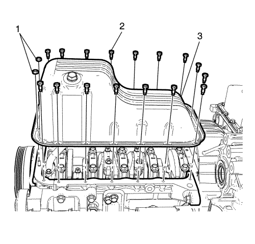
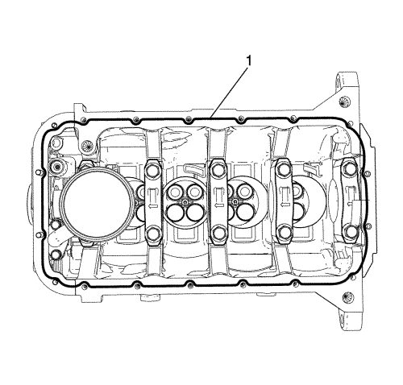

Sustitución del cárter de aceite
Procedimiento de desmontaje
- Abra el capó.
- Suba el vehículo a la altura máxima. Consultar Elevación del vehículo con un gato .
- Coloque debajo un recipiente.
- Quite el tornillo de evacuación de aceite.
- Vacíe el aceite de motor.
Precaución: Consulte Precaución con las fijaciones en la sección Prólogo
- Monte el anillo de junta nuevo y el tornillo de vaciado del aceite, y apriételo a 8 N·m (71 lib. pulg.).
- Baje el vehículo a la altura máxima.
- Retire el tubo indicador del nivel de aceite. Consultar Sustitución del tubo de la varilla de nivel de aceite .
- Suba el vehículo a la altura máxima.
- Retirar el protector de salpicaduras del habitáculo frontal. Consultar Sustitución del protector de salpicaduras del habitáculo frontal .
- Desmonte el tubo flexible de escape. Consultar Sustitución del tubo de escape .

- Extraiga los 3 pernos de la placa inferior de la carcasa de la transmisión.
- Desmonte la placa inferior de la carcasa de la transmisión.

Nota: Desmonte el cárter de aceite de forma regular por todos los lados con una herramienta adecuada.
- Extraiga los 16 pernos (2) y las 2 tuercas (1) del cárter de aceite y desmonte el cárter de aceite (3).
Procedimiento de montaje
- Limpie las superficies de sellado.

- Aplique un fino cordón de unos 3,5 mm (0,14 pulgadas) de sellante para el cárter de aceite a las uniones (1).
Precaución: Consulte Precaución con las fijaciones en la sección Prólogo
Nota: El tiempo de montaje, incluido el apriete, no debe ser superior a 10 minutos.
- Introduzca los 16 pernos (2) y las 2 tuercas (1) en el cárter de aceite (3) y apriételos a 10 N·m (89 lib. pulg.).
- Monte la placa inferior de la carcasa de la transmisión.
- Introduzca los 3 pernos de la placa inferior de la carcasa en la transmisión y apriételos a 10 N·m (89 lib. pulg.).
- Monte el tubo flexible de escape. Consultar Sustitución del tubo de escape .
- Monte la pantalla antisalpicaduras del compartimento delantero. Consultar Sustitución del protector de salpicaduras del habitáculo frontal .
- Bajar el vehículo.
- Monte el tubo del indicador de nivel de aceite. Consultar Sustitución del tubo de la varilla de nivel de aceite .
Nota: Compruebe el nivel de aceite del motor y corríjalo si es necesario.
- Eche el aceite de motor recogido.
- Cierre el capó.
| © Copyright Chevrolet. Reservados todos los derechos |